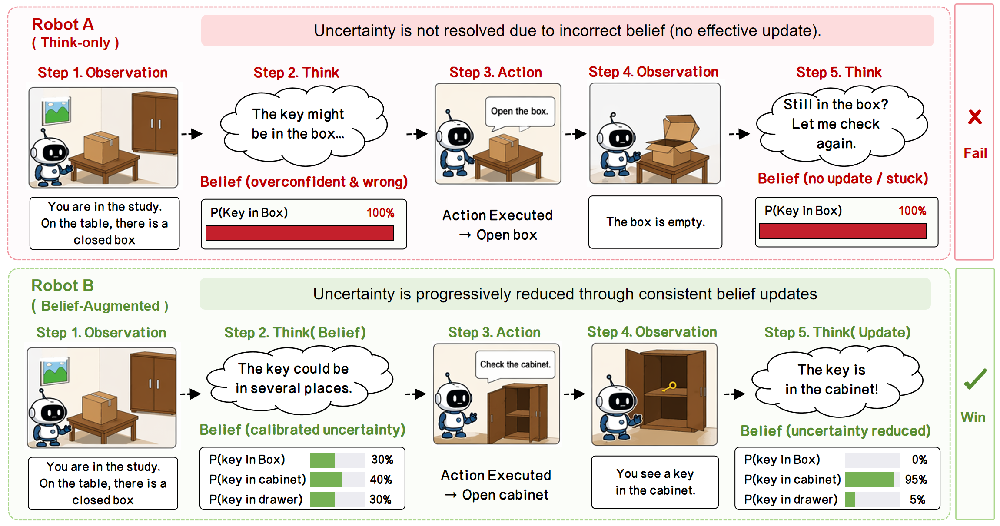
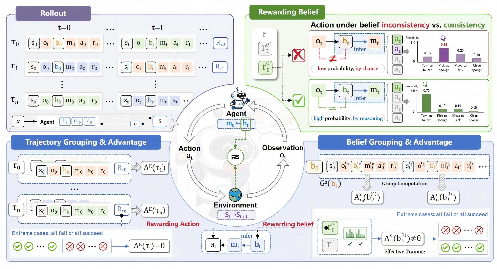
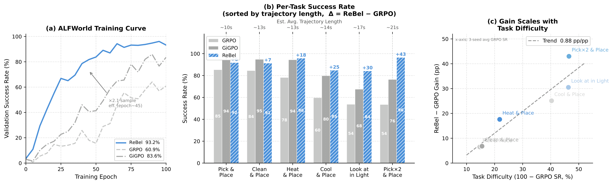
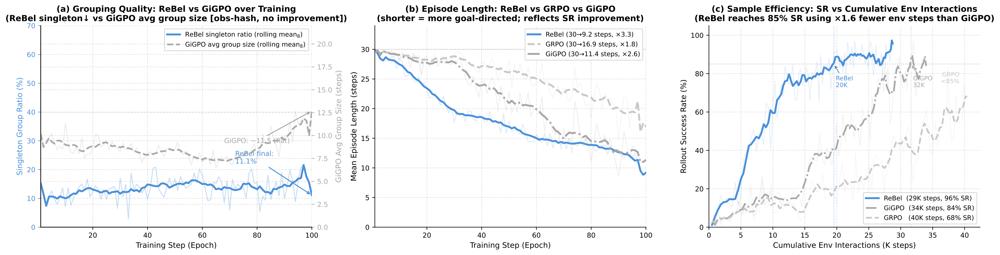

REWARDING BELIEFS, NOT ACTIONS
The agent's world model should not be a black box.
Make it explicit. Structured. Verifiable.
Credit what the agent knows, not what it does.
Every capable agent maintains a world model — a compressed, structured representation of the environment used to reason, anticipate, and plan. Standard LLM agents bury this model inside opaque hidden states where it is invisible to credit assignment and free to drift without consequence. ReBel externalizes the world model as a structured belief segment, making it a first-class object that can be supervised, verified against observations, and corrected when wrong. This is a minimal but concrete instantiation of the world-model loop.
In partially observable environments, agents infer latent state from incomplete observations. Small inference errors compound over 30+ steps into belief drift — the agent thinks it holds an apple, but its hands are empty. Delayed terminal rewards can't trace the failure back to the original misinference. Credit assignment collapses.
ReBel makes belief explicit, structured, and verifiable. At each step, the agent outputs a structured belief (object locations, states, task phase, predictions) alongside its reasoning. This belief is checked against subsequent observations — mismatches produce immediate, dense learning signals.

Belief inconsistency (left) vs. ReBel's consistent belief tracking (right). When the internal world model drifts, actions become invalid even with confident token probabilities. ReBel eliminates this failure mode.
Reward the agent for maintaining an accurate world model, not merely for reaching the goal. ReBel converts sparse terminal rewards into dense process-level signals through two complementary mechanisms.
A dense, step-wise signal that verifies each predicted predicate against subsequent observations. Three components track object locations & states (r_state), task phase (r_task), and expected observation keywords (r_pred). Unverifiable predicates go into a pending buffer and receive credit retroactively when evidence arrives. Observability masking prevents penalizing the agent for what it cannot yet see.
GRPO variants group rollouts by observation hash, which collapses in POMDPs — most groups become singletons, nullifying step-level advantage. ReBel groups by belief equivalence class: two steps share a group if the agent believes the same predicates at that moment. This yields semantically homogeneous comparison groups even when physical states never repeat.

Overview of ReBel. Structured belief generation → consistency verification against observations → belief-anchor grouping for stable step-level advantage. Dense self-supervised signals replace sparse terminal-only feedback.
ReBel establishes a new performance frontier on ALFWorld and WebShop. All RL methods use Qwen2.5-1.5B-Instruct; mean ± std over 3 random seeds.
| Paradigm | Method | ALFWorld | WebShop | |||||||||
|---|---|---|---|---|---|---|---|---|---|---|---|---|
| Pick | Look | Clean | Heat | Cool | Pick2 | Overall | Score | SR | ||||
| Closed-source Frontier Models (zero-shot) | ||||||||||||
| Prompt | GPT-4o | 75.3 | 60.8 | 31.2 | 56.7 | 21.6 | 49.8 | 48.0 | 31.8 | 23.7 | ||
| Prompt | Gemini-2.5-Pro | 92.8 | 63.3 | 62.1 | 69.0 | 26.6 | 58.7 | 60.3 | 42.5 | 35.9 | ||
| Prompt-based Agents (Qwen2.5-1.5B-Instruct) | ||||||||||||
| Prompt | Qwen2.5 | 5.9 | 5.5 | 3.3 | 9.7 | 4.2 | 0.0 | 4.1 | 23.1 | 5.2 | ||
| Prompt | ReAct | 17.4 | 20.5 | 15.7 | 6.2 | 7.7 | 2.0 | 12.8 | 40.1 | 11.3 | ||
| Prompt | Reflexion | 35.3 | 22.2 | 21.7 | 13.6 | 19.4 | 3.7 | 21.8 | 55.8 | 21.9 | ||
| RL-trained Agents (Qwen2.5-1.5B-Instruct, 3 seeds) | ||||||||||||
| RL | PPO | 64.8 | 40.5 | 57.1 | 60.6 | 46.4 | 47.4 | 54.4 | 73.8 | 51.5 | ||
| RL | RLOO | 88.3 | 52.8 | 71.0 | 62.8 | 66.4 | 56.9 | 69.7 | 73.9 | 52.1 | ||
| RL | GRPO | 85.3 | 53.7 | 84.5 | 78.2 | 59.7 | 53.5 | 72.8 | 75.8 | 56.8 | ||
| RL | GiGPO w/std | 94.4 | 67.5 | 94.8 | 94.4 | 79.8 | 76.4 | 86.7 | 83.1 | 65.0 | ||
| RL | GiGPO w/o std | 96.0 | 76.5 | 91.8 | 91.3 | 71.7 | 79.5 | 86.1 | 83.5 | 67.4 | ||
| RL | ReBel (Ours) | 91.8 | 84.2 | 91.3 | 95.8 | 84.8 | 96.5 | 93.2 | 79.8 | 75.1 | ||
96.5% — +36.2 pp over Gemini-2.5-Pro, +17.0 pp over best GiGPO.
Matches GRPO's final SR at iteration 35 (vs. 100), without dense human annotations.
Average episode length drops from 29.9 to 9.2 steps — accurate world model → efficient plans.

Training dynamics and per-task performance. (a) ReBel reaches GRPO's terminal SR at iteration ~35. (b) Per-task success rates sorted by trajectory length; Δ = gain over GRPO. (c) ReBel's advantage grows with task difficulty, confirming belief-tracking value scales with partial-observability depth.
| Variant | Belief Prompt | Belief Grouping | Step Adv. | Belief Reward | ALFWorld SR | Δ |
|---|---|---|---|---|---|---|
| B0: GRPO | — | — | — | — | 60.9 | — |
| B1: + Belief Prompt | ✓ | — | — | — | 78.1 | +17.2 |
| B2: + Grouping & StepAdv | ✓ | ✓ | ✓ | — | 93.0 | +14.9 |
| B3: ReBel (full) | ✓ | ✓ | ✓ | ✓ | 96.9 | +3.9 |
Making latent state tracking explicit already provides a large gain. But B1 still relies on high-variance trajectory-level rewards — insufficient for long horizons.
The largest single gain. Belief-anchor step advantage provides dense optimization signals that identify critical intermediate subgoals — the mechanism behind the 2.1× sample efficiency gain.
B2 → B3 (+3.9): Belief-consistency reward (r_cons) anchors the policy to environmental ground truth, preventing correct actions from hallucinated states. All three components are synergistic.

Grouping quality → credit assignment → efficiency. (a) ReBel maintains low singleton ratios; GiGPO's observation-hash grouping frequently collapses. (b) Average episode length drops 29.9 → 9.2 steps. (c) ReBel reaches 85% rollout success with 1.6× fewer environment steps, with smoother convergence and tighter confidence bands.
Better groups → more reliable advantages → shorter execution → faster convergence. One causal story.
Observation-hash grouping conflates distinct latent states; belief-equivalence grouping captures what the agent thinks is true, not what it sees.
ReBel's training is not just faster but more stable — narrower variance reflects the regularizing effect of belief-consistency supervision.
ReBel is not just a better RL algorithm. It is a concrete architectural argument for how LLM agents should be built — with an explicit, inspectable world model at their core.
Standard RL treats the value function as a black box. ReBel shows that externalized, verifiable belief can carry the credit signal directly — bypassing the need to reconstruct latent state.
The belief segment today is a structured snapshot. At scale, this loop could grow into a genuine predictive model — anticipating observations, detecting causal structure, planning over imagined trajectories.
Long-horizon decision making is not won by faster actions, but by truer beliefs — credit must flow to what the agent knows, not merely to what it does.
— ReBel